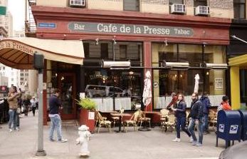
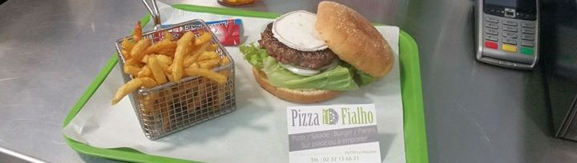
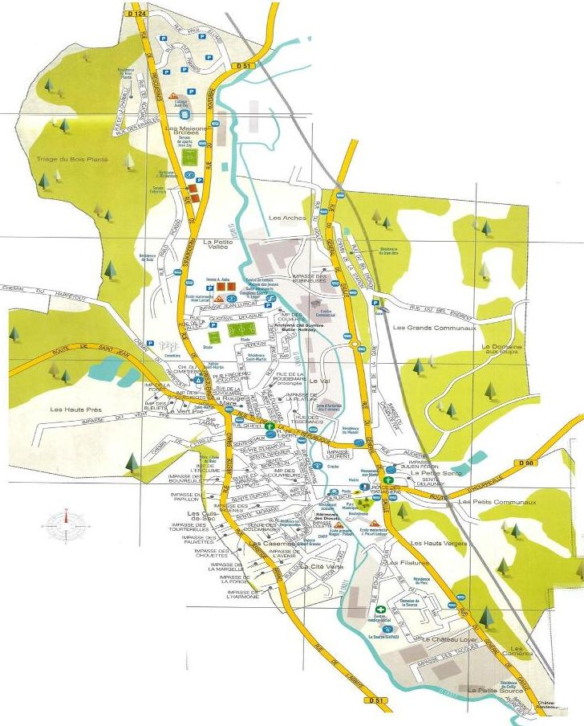
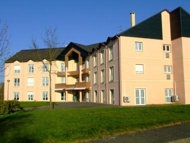

LES COMMERÇANTS
Les commerçants de notre ville :
BOULANGERS - PÂTISSIERS
LA BOITE DES DELICES : 110 RUE DU G. DE GAULLE - 02 35 78 89 47
M PIMONT YOHAN : 145 RUE DU G. DE GAULLE - 02 35 75 82 41
M RAULIN JEAN-CLAUDE : 5 PL DE LA LIBERTE - 02 35 75 21 23
CHARCUTERIE - TRAITEUR
ERS 161b RUE DU G. DE GAULLE - 02 35 05 45 85
EPICERIE - SUPERETTEMini Market 97 RUE DU G. DE GAULLE - 09 83 55 59 12
RESTAURANT
Pizza Fialho 141 RUE DU G. DE GAULLE - 02 32 13 66 21
Restaurant du Viaduc 172 RTE DU G. DE GAULLE - 02 35 76 08 09
O Delice 121 RUE DU G. DE GAULLE - 02 35 81 69 83
CAFÉS - BARBar de l'Union 51 RUE DES MARTYRS - 02 35 74 03 19
Café de la Mairie 06 RUE DU G. DE GAULLE - 02 35 74 21 67
Le Five Kafe 134 RUE DU G. DE GAULLE - 02 35 74 32 53
BRODERIEBroderie Passion 112 RUE DU G. DE GAULLE - 02 35 75 58 59
COIFFEURSActuel Coiffure 142 RUE DU G. DE GAULLE - 02 35 76 72 13
Sylvie Esthetique 146 RUE DU G. DE GAULLE - 06 18 49 64 09
ORIGIN'HAIR 114 RUE ARISTIDE BRIAND - 02 35 74 53 60
Dream Look 108 RUE DU G. DE GAULLE - 02 35 75 40 07
Le Petit Salon 103 RUE DU G. DE GAULLE - 02 32 82 56 60
LE CARRE D’AS COIFFEUR à domicile - 06 03 95 93 20
TATIANA THIERRY Esthéticienne à domicile - 06 66 03 78 92
FLEURISTESFleur de Lys 14 RUE GUSTAVE QUILBEUF - 02 35 75 20 93
LAVERIESLaverie Automatique 98 DU G. DE GAULLE
BIJOUTERIE Saint-Eloy 105 RUE DU G. DE GAULLE - 02 33 74 41 34
INFORMATIQUEWeb Informatique 1b RUE DE LA GARE - 06 99 50 76 76
REPASSAGE90 RUE A. BRIAND - 06 72 47 10 33
AGENCE IMMOBILIÈREACTIMMO 1 RUE DE LA REPUBLIQUE - 02 35 76 61 91
HYPER-MARCHÉLECLERC 163 RUE DU G. DE GAULLE - 02 35 76 86 20
LES ARTISANTS ET SERVICES LOCAUX
Garagistes
M. GRUN François 2 rue de la république - Réparation motos-autos - 02 35 74 10 38
Garage RINETEAU DELHAYE 26 rue A. BRIAND - Carrosserie et mécanique - 02 35 75 66 90
CHARY Automobile 2 rue du viaduc - Carrosserie et mécanique - 02 35 75 53 81
AUTO REPERE 2 zone des deux rivières - Entretien et accessoires 02 35 81 52 59
DEKRA 165 rue Général de GAULLE - Centre de contrôle technique - 02 35 77 90 00
AUTOVISION 161 rue général de GAULLE - Centre de contrôle technique - 02 35 75 01 01
Plombiers
STIN 15 RUE QUILBEUF - 06 79 37 99 80
AVIFORT 2 RUE DE LA REPUBLIQUE - 07 86 29 37 94
KA de plomberie 73a rue G. de GAULLE - 02 35 87 38 79
Menuisiers
NORMANDIE VOLETS 165 RUE DU G. DE GAULLE - 09 61 42 13 14
FB FERMETURES 2 RUE DE LA REPUBLIQUE - 02 35 77 57 46
NORMANDIE FERMETURE 2 RUE DE LA REPUBLIQUE - 02 35 37 41 59
Maçons et bâtiment
B.V.R. NORMANDIE 2 RUE DE LA REPUBLIQUE - 02 35 74 85 19
GRANITS ET MATERIAUX 73 A RUE DU G. DE GAULLE - 02 35 75 64 07
HM MATERIAUX 161 B RUE DU G. DE GAULLE - 02 35 76 39 39
Couvreur
PHILIPPE LESUEUR 75 RTE DE ST JEAN - 02 35 76 16 93
DURAND 2 rue de Fresquiennes - 02 35 33 01 32
Matelassier
L'ATELIER DU MATELAS 160 RUE DU G. DE GAULLE - 02 35 76 82 35
Taxis
M. ANTOR NICOLAS 25 RUE JEAN JAURES - 02 35 75 21 51
M. RICHER FRANCK PLACE DES CANADIENS - 06 11 68 6969
L'ATELIER DU MATELAS 160 RUE DU G. DE GAULLE - 02 35 76 82 35
Courses
Thierry course - Transport de personnes – VTC - 06 19 39 46 40
PLAN DE LA VILLE
L'EHPAD
Sous la direction de Mme DAMAS Claudine
PRÉSENTATION DE L ÉTABLISSEMENT D’HÉBERGEMENT POUR AGEES DÉPENDANTES :
La résidence La Source est une structure dont la mission est d'accueillir des personnes autonomes, semi valides, et dépendantes d'au moins 60 ans seules ou en couple. L'EHPAD est géré le Centre Communal d'Action Sociale (CCAS) de la Ville du HOULME.
VOTRE LOGEMENT
L'établissement dispose de 38 chambres particulières et 9 chambres doubles. Ces chambres sont meublées : lit, commode ou armoire, table de chevet, fauteuil, chaise .Vous pouvez cependant meubler votre chambre avec du mobilier personnel. Dans ce cas le mobilier appartenant à l'EHPAD sera enlevé. Il est important que vous soyez chez vous. A votre arrivée, et suivant votre état de santé, il vous sera remis les clés de votre chambre. La priorité des admissions est réservée aux habitants de la Ville du HOULME mais reste ouverte aux personnes extérieures.
VOTRE VIE A L'EHPAD
Vous pouvez recevoir librement la visite de vos proches. Chaque résident entre, sort, et reçoit comme il le souhaite. Toutefois, afin de ne pas susciter d'inquiétude, il est préférable d'aviser le personnel de vos absences. En cas de retour après 20 h l'hiver (ou 21 h l'été) une sonnette est à votre disposition à l'entrée principale. Il est également souhaitable que vous informiez le personnel de votre retour.
VOS ACTIVITÉS ET LOISIRS
Un programme hebdomadaire est affiché dans le hall d'entrée, sur lequel figure la liste des différentes activités proposées par l'Établissement. Toutefois, si vous avez une passion, des idées d'activités à faire partager, vous pouvez les proposer.